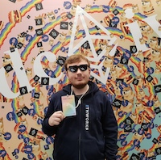
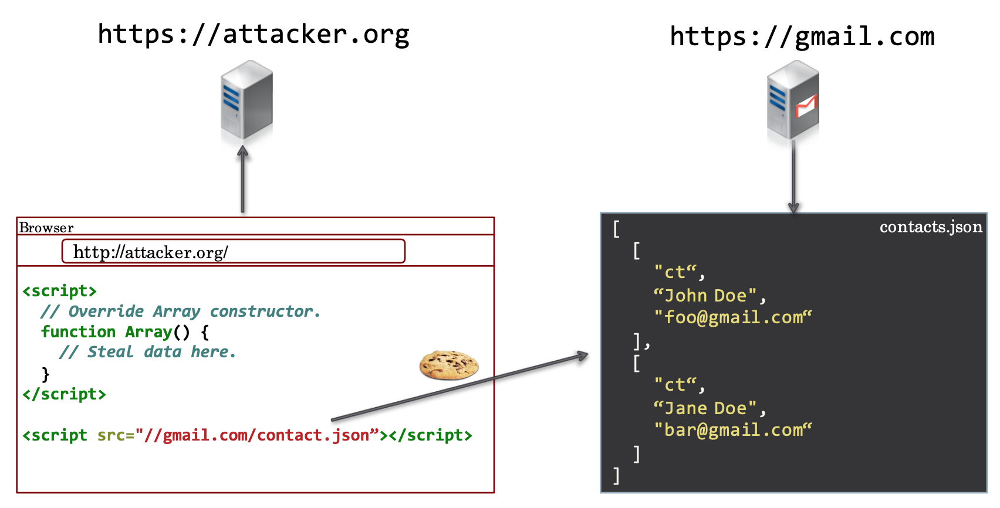

Ivan Rukhavets
Full stack blockchain dev @ Ethworks
We talk about JavaScript. Each month in Warsaw, Poland.

Full stack blockchain dev @ Ethworks
HubHub Guest
amazingspace
#workshop-40-2
Cross-site scripting (XSS) is a vulnerability that permits an attacker to inject code (typically HTML or JavaScript) into contents of a website not under the attacker's control. When a victim views such a page, the injected code executes in the victim's browser. Thus, the attacker has bypassed the browser's same origin policy and can steal victim's private information associated with the website in question.
Execute arbitrary SQL on the server

When a user interacts with a web application, they do it indirectly through a browser. When the user clicks a button or submits a form, the browser sends a request back to the web server. Because the browser runs on a machine that can be controlled by an attacker, the application must not trust any data sent by the browser.


When a browser makes requests to a site, it always sends along any cookies it has for that site, regardless of where the request comes from. Additionally, web servers generally cannot distinguish between a request initiated by a deliberate user action (e.g., user clicking on "Submit" button) versus a request made by the browser without user action (e.g., request for an embedded image in a page). Therefore, if a site receives a request to perform some action (like deleting a mail, changing contact address), it cannot know whether this action was knowingly initiated by the user — even if the request contains authentication cookies. An attacker can use this fact to fool the server into performing actions the user did not intend to perform.

Browsers prevent pages of one domain from reading pages in other domains. But they do not prevent pages of a domain from referencing resources in other domains. In particular, they allow images to be rendered from other domains and scripts to be executed from other domains.

More infoMost web applications serve static resources like images and CSS files. Frequently, applications simply serve all the files in a folder. If the application isn't careful, the user can use a path traversal attack to read files from other folders that they shouldn't have access to.
It's dangerous to store sensitive data, like passwords or credit card data in plain text – we can never be sure we won't get hacked. Store hashed passwords, use symmetric or asymmetric encryption.
The page we're linking to gains partial access to the linking page via the window.opener object.
The newly opened tab can then change the window.opener.location to some phishing page. Users trust the page that is already opened, they won't get suspicious.